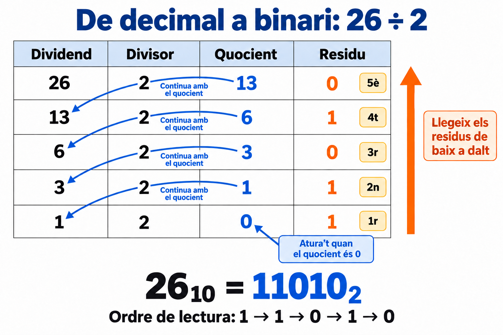

Bloc 2. Sistemes de numeració i conversions
Pregunta clau: com podem escriure una mateixa quantitat en decimal, binari, octal i hexadecimal?
Al bloc anterior hem vist que els ordinadors representen les dades amb bits. Ara aprendrem a interpretar nombres binaris i a convertir-los a altres sistemes de numeració.
Treballarem amb nombres enters no negatius: 0, 1, 2, 3… Les fraccions i la representació de nombres negatius es treballaran més endavant.
Com es diu cada sistema?
Octal és el nom del sistema de base 8. Hexadecimal és el de base 16. En aquest context, el terme correcte és octal, no «octadecimal».
1. Què aprendràs?
- Entendre què és la base d'un sistema de numeració.
- Convertir de decimal a binari i de binari a decimal.
- Convertir de decimal a octal i hexadecimal, i fer el camí invers.
- Passar de binari a octal o hexadecimal agrupant bits.
- Comprovar els resultats fent la conversió inversa.
2. Una mateixa quantitat, diferents maneres d'escriure-la
La base indica quants dígits diferents utilitza un sistema de numeració.
| Sistema | Base | Dígits que podem utilitzar |
|---|---|---|
| Decimal | 10 | 0, 1, 2, 3, 4, 5, 6, 7, 8, 9 |
| Binari | 2 | 0, 1 |
| Octal | 8 | 0, 1, 2, 3, 4, 5, 6, 7 |
| Hexadecimal | 16 | 0–9 i A, B, C, D, E, F |
En hexadecimal, les lletres representen aquests valors:
| Dígit | A | B | C | D | E | F |
|---|---|---|---|---|---|---|
| Valor decimal | 10 | 11 | 12 | 13 | 14 | 15 |
Quan s'acaben els dígits disponibles, afegim una posició. En decimal, després del 9 ve el 10; en binari, després de l'1 ve el 10; en octal, després del 7 ve el 10; en hexadecimal, després de la F ve el 10.
Cal indicar la base
10 no representa la mateixa quantitat en tots els sistemes. 10₂ = 2₁₀, 10₈ = 8₁₀ i 10₁₆ = 16₁₀. El número petit de sota indica la base. També podem escriure «10 en base 2».
Per exemple, aquestes quatre expressions representen la mateixa quantitat:
26₁₀ = 11010₂ = 32₈ = 1A₁₆
Convertir un nombre consisteix a canviar-ne la representació mantenint el valor.
3. El valor de cada posició
En aquests sistemes, el valor d'un dígit depèn de la seva posició. Les posicions es compten de dreta a esquerra, començant per la posició 0.
| Sistema | Posició 3 | Posició 2 | Posició 1 | Posició 0 |
|---|---|---|---|---|
| Decimal | 10³ = 1.000 | 10² = 100 | 10¹ = 10 | 10⁰ = 1 |
| Binari | 2³ = 8 | 2² = 4 | 2¹ = 2 | 2⁰ = 1 |
| Octal | 8³ = 512 | 8² = 64 | 8¹ = 8 | 8⁰ = 1 |
| Hexadecimal | 16³ = 4.096 | 16² = 256 | 16¹ = 16 | 16⁰ = 1 |
Una potència indica una multiplicació repetida: 2³ = 2 × 2 × 2 = 8. Per a les bases que fem servir, la potència amb exponent zero val 1.
Ja utilitzes aquesta idea quan llegeixes un nombre decimal:
347₁₀ = 3 × 100 + 4 × 10 + 7 × 1
Per interpretar les altres bases farem el mateix, canviant el valor de les posicions.
4. De binari a decimal: sumar els valors de les posicions
Exemple resolt: 11010₂ a decimal
Pas 1. Escriu els valors de les posicions. Comença amb 1 a la dreta i duplica el valor cap a l'esquerra.
| Valor de la posició | 16 | 8 | 4 | 2 | 1 |
|---|---|---|---|---|---|
| Bit del nombre | 1 | 1 | 0 | 1 | 0 |
Pas 2. Multiplica cada bit pel valor de la seva posició:
1 × 16 + 1 × 8 + 0 × 4 + 1 × 2 + 0 × 1
Pas 3. Suma els resultats:
16 + 8 + 2 = 26
Per tant, 11010₂ = 26₁₀.
Una manera ràpida de fer-ho
Només cal sumar les posicions que tenen un 1. Les que tenen un 0 aporten zero.
Un altre exemple: 10100101₂
| Valor de la posició | 128 | 64 | 32 | 16 | 8 | 4 | 2 | 1 |
|---|---|---|---|---|---|---|---|---|
| Bit | 1 | 0 | 1 | 0 | 0 | 1 | 0 | 1 |
10100101₂ = 128 + 32 + 4 + 1 = 165₁₀
5. De decimal a binari: divisions successives entre 2
Utilitzarem divisions enteres: de cada divisió ens quedem amb el quocient i el residu, sense calcular decimals.
Per exemple, 13 ÷ 2 dona quocient 6 i residu 1, perquè 13 = 6 × 2 + 1.
Exemple resolt: 26₁₀ a binari
Pas 1. Divideix el nombre entre 2.
Pas 2. Torna a dividir el quocient entre 2. Repeteix fins que el quocient sigui 0.
| Nombre que dividim | Divisor | Quocient | Residu |
|---|---|---|---|
| 26 | 2 | 13 | 0 |
| 13 | 2 | 6 | 1 |
| 6 | 2 | 3 | 0 |
| 3 | 2 | 1 | 1 |
| 1 | 2 | 0 | 1 |
Pas 3. Llegeix els residus de baix a dalt: 1, 1, 0, 1, 0.
26₁₀ = 11010₂
Comprovació: 16 + 8 + 2 = 26.

Com es llegeix la imatge: les fletxes blaves indiquen quin quocient tornem a dividir. Quan el quocient és 0, parem. La fletxa taronja indica l'ordre en què agafem els residus, numerats de l'1r al 5è: de baix a dalt. Aquests residus formen el resultat binari.
Per què llegim els residus de baix a dalt?
La primera divisió ens dona el bit de les unitats, que va a la dreta. La següent ens dona el bit de la posició que val 2; després, el de la posició que val 4… Obtenim els bits començant pel de més a la dreta.
Si ens demanen escriure el resultat amb 8 bits, afegim zeros a l'esquerra:
11010₂ = 00011010₂
Els zeros inicials no canvien el valor. Si el nombre ja necessita més de 8 bits, no podem representar-lo amb 8 bits sense perdre informació.
Cas especial: el nombre decimal 0 es representa directament com a 0 en binari.
6. De decimal a octal: divisions entre 8
Fem el mateix procediment que amb el binari, però dividim entre 8. Els residus poden anar del 0 al 7.
Exemple resolt: 156₁₀ a octal
| Nombre que dividim | Divisor | Quocient | Residu |
|---|---|---|---|
| 156 | 8 | 19 | 4 |
| 19 | 8 | 2 | 3 |
| 2 | 8 | 0 | 2 |
Llegim els residus de baix a dalt:
156₁₀ = 234₈
D'octal a decimal: el camí invers
Multipliquem cada dígit pel valor de la seva posició:
234₈ = 2 × 8² + 3 × 8¹ + 4 × 8⁰
= 2 × 64 + 3 × 8 + 4 × 1
= 128 + 24 + 4 = 156₁₀
En octal no hi ha ni 8 ni 9
128 no pot ser un nombre escrit en base 8, perquè conté el dígit 8.
7. De decimal a hexadecimal: divisions entre 16
Ara dividim entre 16. Els residus poden anar del 0 al 15. Si el residu és del 10 al 15, l'escrivim amb la lletra corresponent: A, B, C, D, E o F.
Exemple resolt: 254₁₀ a hexadecimal
| Nombre que dividim | Divisor | Quocient | Residu decimal | Dígit hexadecimal |
|---|---|---|---|---|
| 254 | 16 | 15 | 14 | E |
| 15 | 16 | 0 | 15 | F |
Llegim els dígits de baix a dalt:
254₁₀ = FE₁₆
Cada residu ha d'ocupar un sol dígit
El residu 14 s'escriu E. Escriure 14 introduiria dues posicions hexadecimals i canviaria el resultat.
D'hexadecimal a decimal: el camí invers
Primer substituïm les lletres pels seus valors decimals:
FE₁₆ = 15 × 16¹ + 14 × 16⁰
= 15 × 16 + 14 × 1
= 240 + 14 = 254₁₀
Amb tres dígits, apareix la posició que val 16²:
1A3₁₆ = 1 × 256 + 10 × 16 + 3 × 1 = 419₁₀
8. De binari a hexadecimal: grups de 4 bits
Hi ha una drecera perquè 2⁴ = 16: quatre bits tenen exactament les combinacions necessàries per representar un dígit hexadecimal.
| Decimal | Binari amb 4 bits | Hexadecimal |
|---|---|---|
| 0 | 0000 |
0 |
| 1 | 0001 |
1 |
| 2 | 0010 |
2 |
| 3 | 0011 |
3 |
| 4 | 0100 |
4 |
| 5 | 0101 |
5 |
| 6 | 0110 |
6 |
| 7 | 0111 |
7 |
| 8 | 1000 |
8 |
| 9 | 1001 |
9 |
| 10 | 1010 |
A |
| 11 | 1011 |
B |
| 12 | 1100 |
C |
| 13 | 1101 |
D |
| 14 | 1110 |
E |
| 15 | 1111 |
F |
Exemple resolt: 11010110₂ a hexadecimal
- Forma grups de 4 bits començant per la dreta:
1101 0110. - Converteix cada grup:
1101és D i0110és 6. - Conserva l'ordre dels grups: 11010110₂ = D6₁₆.
Si al grup de l'esquerra li falten bits, afegeix-hi zeros a l'esquerra:
11010₂ →
1 1010→0001 1010→ 1A₁₆
D'hexadecimal a binari
Substitueix cada dígit hexadecimal per 4 bits, conservant l'ordre:
A3₁₆ →
A → 1010i3 → 0011→ 10100011₂
Conserva els quatre bits de cada grup
El dígit 3 s'ha d'escriure 0011 dins del grup. Si escrivíssim 1010 11 per a A3, obtindríem un valor diferent. Només es poden eliminar els zeros inicials del nombre complet.
9. De binari a octal: grups de 3 bits
Com que 2³ = 8, cada grup de tres bits correspon a un dígit octal.
| Binari amb 3 bits | Octal |
|---|---|
000 |
0 |
001 |
1 |
010 |
2 |
011 |
3 |
100 |
4 |
101 |
5 |
110 |
6 |
111 |
7 |
Exemple resolt: 11010110₂ a octal
- Forma grups de 3 bits començant per la dreta:
11 010 110. - Completa el grup de l'esquerra:
011 010 110. - Converteix els grups, mantenint-ne l'ordre:
011 → 3,010 → 2,110 → 6.
11010110₂ = 326₈
D'octal a binari
Substitueix cada dígit octal per 3 bits:
57₈ →
5 → 101i7 → 111→ 101111₂
10. D'octal a hexadecimal i a l'inrevés
Podem utilitzar el binari com a pas intermedi: desfem els grups d'una base i els tornem a agrupar per a l'altra.
D'octal a hexadecimal: 57₈
- Passem cada dígit octal a 3 bits:
57₈ → 101 111₂. - Reagrupem de 4 en 4 des de la dreta:
10 1111. - Completem amb zeros a l'esquerra:
0010 1111. - Convertim cada grup a hexadecimal: 57₈ = 2F₁₆.
D'hexadecimal a octal: 2F₁₆
- Passem cada dígit hexadecimal a 4 bits:
2F₁₆ → 0010 1111₂. - Reagrupem de 3 en 3 des de la dreta:
00 101 111. - Completem el primer grup:
000 101 111. - Convertim a octal:
057₈, que podem escriure 57₈.
11. Quin procediment he de triar?
| Conversió | Procediment |
|---|---|
| Decimal → binari | Dividir entre 2 i llegir els residus de baix a dalt. |
| Decimal → octal | Dividir entre 8 i llegir els residus de baix a dalt. |
| Decimal → hexadecimal | Dividir entre 16, substituir els residus 10–15 per A–F i llegir de baix a dalt. |
| Binari, octal o hexadecimal → decimal | Multiplicar cada dígit pel valor de la seva posició i sumar. |
| Binari → hexadecimal | Agrupar de 4 en 4 des de la dreta. |
| Hexadecimal → binari | Escriure 4 bits per cada dígit. |
| Binari → octal | Agrupar de 3 en 3 des de la dreta. |
| Octal → binari | Escriure 3 bits per cada dígit. |
| Octal ↔ hexadecimal | Passar per binari i reagrupar. |
Comprova sempre el resultat
Fes la conversió inversa o passa les dues representacions a decimal. Per exemple: D6₁₆ = 13 × 16 + 6 = 214₁₀ i 326₈ = 3 × 64 + 2 × 8 + 6 = 214₁₀. Representen la mateixa quantitat.
12. Per a què ens serveix en sistemes operatius?
- Binari: per interpretar bits, indicadors i representacions internes de dades.
- Hexadecimal: per escriure seqüències de bits de manera més compacta. Un byte es pot representar amb dos dígits hexadecimals:
11111111₂ = FF₁₆. - Octal: per expressar, entre altres coses, permisos de fitxers en sistemes Unix i Linux. Un grup de tres bits pot indicar lectura, escriptura i execució. Ho treballarem al bloc de permisos.
Per exemple, el grup 101₂ val 5₈. Interpretat com a permisos en l'ordre lectura, escriptura i execució, indica lectura activada, escriptura desactivada i execució activada. La conversió ens dona el valor; el context ens diu què significa.
13. Practica pas a pas
Resol els exercicis sense calculadora. Escriu les divisions o els valors de les posicions per justificar la resposta.
A. Decimal i binari
- Converteix 13₁₀ a binari.
- Converteix 42₁₀ a binari i escriu-lo amb 8 bits.
- Converteix 101101₂ a decimal.
- Converteix 10000000₂ a decimal.
Solucions A
- Divisions entre 2:
13 → 6 r1,6 → 3 r0,3 → 1 r1,1 → 0 r1. Llegint els residus de baix a dalt: 1101₂. Comprovació:8 + 4 + 1 = 13. - Divisions entre 2:
42 → 21 r0,21 → 10 r1,10 → 5 r0,5 → 2 r1,2 → 1 r0,1 → 0 r1. Resultat:101010₂; amb 8 bits: 00101010₂. 32 + 8 + 4 + 1 =45₁₀.- Només hi ha un 1 a la posició que val 128: 128₁₀.
B. Decimal, octal i hexadecimal
- Converteix 83₁₀ a octal.
- Converteix 145₈ a decimal.
- Converteix 175₁₀ a hexadecimal.
- Converteix 2B₁₆ a decimal.
Solucions B
- Divisions entre 8:
83 → 10 r3,10 → 1 r2,1 → 0 r1. Resultat: 123₈. 1 × 64 + 4 × 8 + 5 =101₁₀.- Divisions entre 16:
175 → 10 r15,10 → 0 r10. Els residus són F i A; llegits de baix a dalt: AF₁₆. 2 × 16 + 11 =43₁₀.
C. Agrupacions de bits
- Converteix 11110010₂ a hexadecimal.
- Converteix 3C₁₆ a binari amb 8 bits.
- Converteix 101110₂ a octal.
- Converteix 64₈ a binari.
- Converteix 75₈ a hexadecimal.
- Converteix B2₁₆ a octal.
Solucions C
1111 0010 → F 2: F2₁₆.3 → 0011,C → 1100: 00111100₂.101 110 → 5 6: 56₈.6 → 110,4 → 100: 110100₂.75₈ → 111 101₂ → 0011 1101₂: 3D₁₆.B2₁₆ → 1011 0010₂ → 010 110 010₂: 262₈.
D. Detecta l'error
- Un alumne diu que 10201₂ és un nombre binari vàlid. Té raó?
- Una alumna converteix 26₁₀ a binari i escriu
01011, llegint els residus de dalt a baix. Què ha de corregir? - Per convertir
10101₂a hexadecimal, algú afegeix zeros a la dreta i obté10101000₂. Per què no és correcte?
Solucions D
- No: en binari només podem utilitzar 0 i 1, i aquest nombre conté un 2.
- Ha de llegir els residus de baix a dalt: el resultat és 11010₂. El nombre que havia escrit,
01011₂, val 11₁₀. - Afegir zeros a la dreta canvia el valor. Cal completar per l'esquerra:
0001 0101₂ =15₁₆, que continua valent 21₁₀.
14. Repte final: una quantitat en quatre bases
Representa 202₁₀ en binari, octal i hexadecimal. Fes primer les divisions entre 2 i després utilitza agrupacions de bits per obtenir les altres dues bases. Comprova els resultats passant-los a decimal.
Solució del repte
202₁₀ = 11001010₂ = 312₈ = CA₁₆.
- Binari:
128 + 64 + 8 + 2 = 202. - Octal:
011 001 010 → 312₈; comprovació:3 × 64 + 1 × 8 + 2 = 202. - Hexadecimal:
1100 1010 → CA₁₆; comprovació:12 × 16 + 10 = 202.